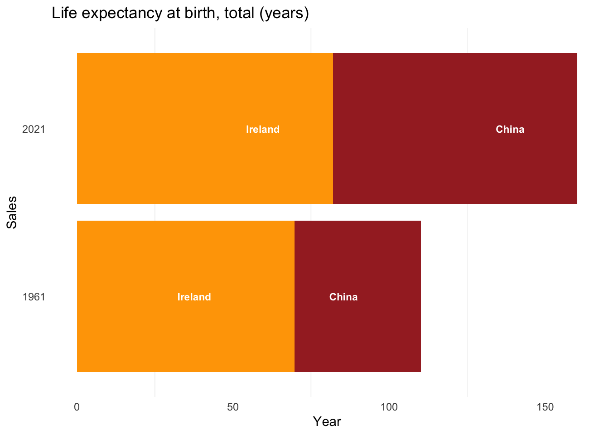
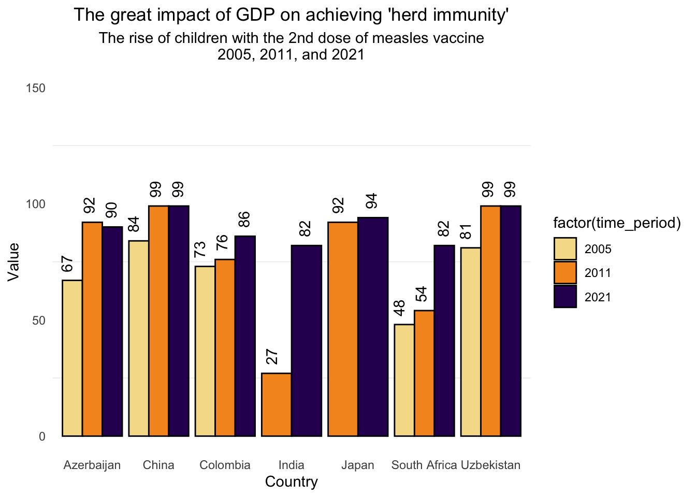
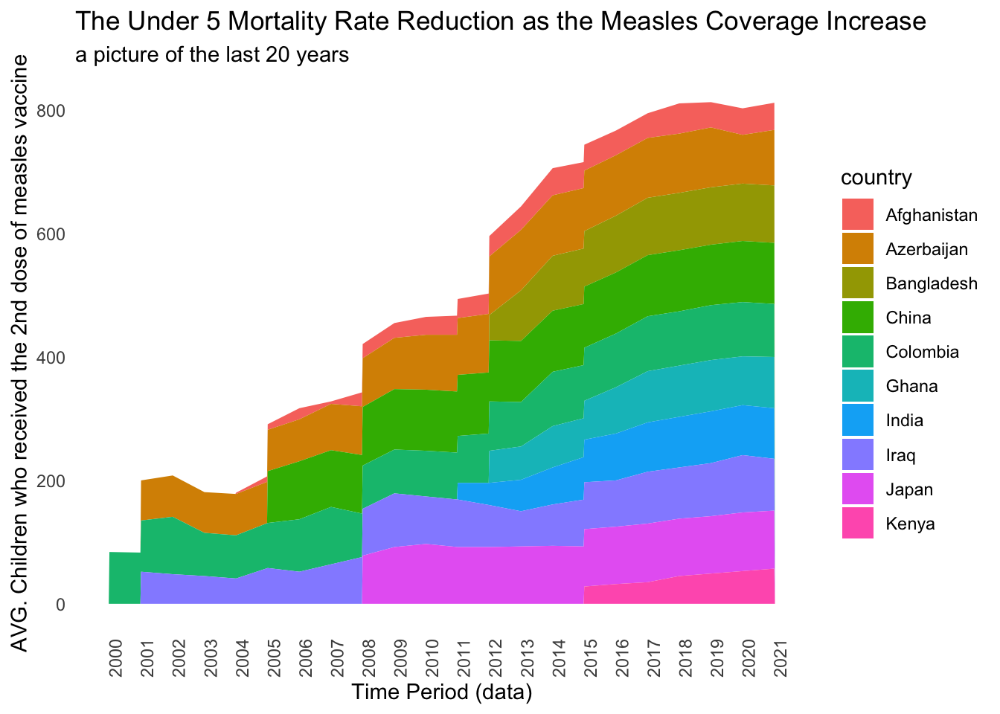
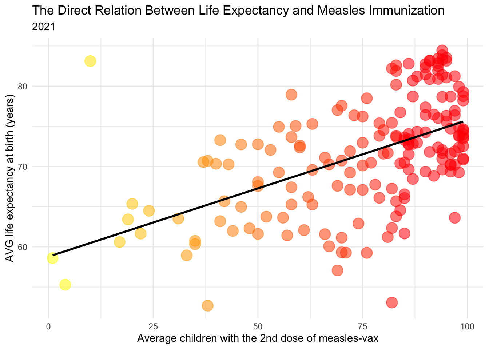
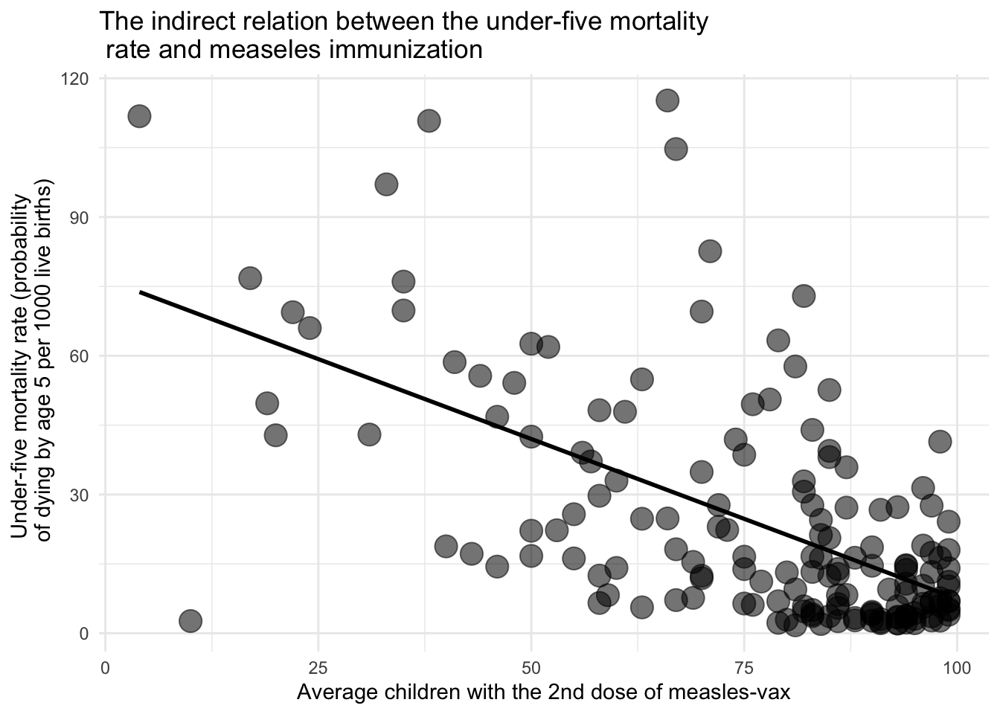
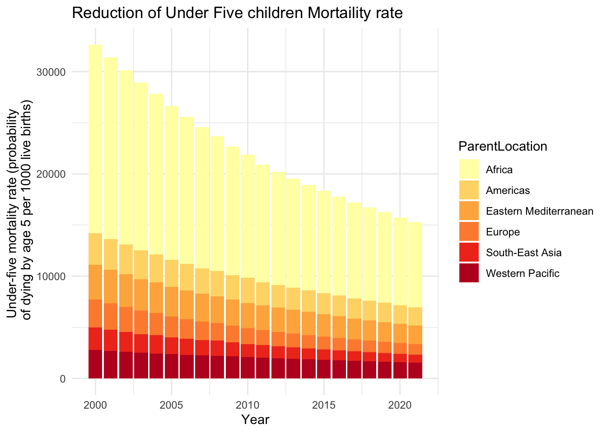
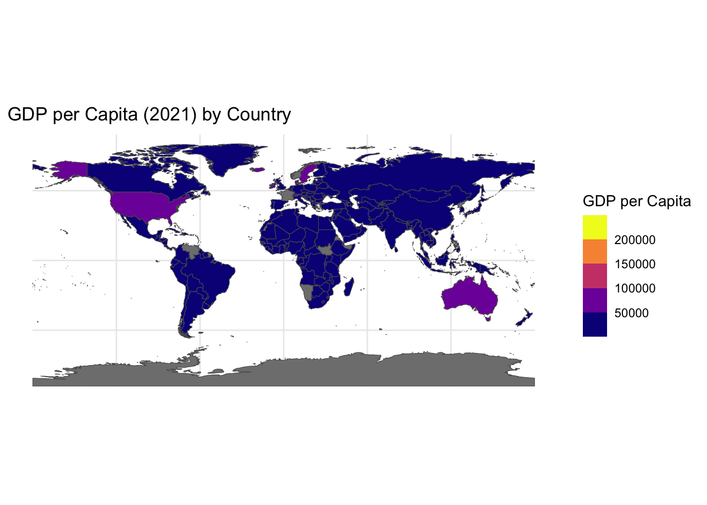

IS THE WORLD A BETTER PLACE FOR CHILDREN?
An Analysis of the correlation between GDP, Measles Vaccination and Children Well-Being
Introduction
Undoubtedly, the world is a richer place given the widespread growth of GDP in recent decades. The new economic prosperity has led to an extension of life expectancy worldwide, impacting particularly on the Emerging Countries.
Vaccination Coverage by Country in 2018
But, unfortunately, it’s not possible to claim that the world is a better place when 17,000 children under the age of 5 die every day, largely from vaccine-preventable disease, like Measles.
To reduce Measles Mortality rate UNICEF aims to leverage the GDP as a catalyst for countries that are lagging behind in the march of progress, funding immunization campaigns.
These efforts have been rewarded, as seen in the outcomes achieved in the last two decades in many lower-income countries. With the rise in GDP, there has been a notable increase in vaccination coverage. For instance, in countries such as China, where rapid economic growth has elevated its status from an emerging to a developed nation, vaccination coverage has surged, with nearly 99% of children now receiving the second dose of the Measles vaccine.

Such remarkable results have significantly decreased the likelihood of mortality among children under the age of 5 in numerous less developed countries, even reducing the percentage by half in some nations like Ghana.
The profound importance of vaccination finds expression in its dual correlation with life expectancy and mortality rates.

Looking at 2021 data, a striking trend emerges: where the proportion of children receiving the second dose of the vaccine is higher, life expectancy rises significantly, often yielding disparities of over twenty years between nations like Austria (81 years) and Somalia (55.97 years).
In contrast, as vaccination coverage expands, the risk of mortality among children under 5 declines significantly. In Austria, the death rate plummets to a mere 4%, showcasing the effectiveness of comprehensive vaccination programs. However, it’s disheartening to note that in countries like Somalia, the figures persist at alarmingly high levels, with a probability of 111.4 deaths per 1000 live births by the age of 5. This underscores the urgent need for continued support and investment in healthcare infrastructure and vaccination initiatives to safeguard the lives of children worldwide.

Yes, GDP has actually increased in all countries. However, this expansion has also determined a greater gap between high-income countries and low-income ones: the GDP disparity between Europe and Africa has more than doubled from 1960 to the present day.
The reduction of the well-entrenched inequality in wealth distribution is fundamental to funds vaccination campaigns, which are the most cost-effective, but the most impactful on children lives. These childhood vaccines save more than five lives every minute, preventing up to three million deaths per year.

Therefore, is crucial to persist in pushing our mission for a more equal world in which all childrens counts the same.
Thanks to our collective efforts we’ve witnessed remarkable results in many countries. Such as Afghanistan, where in just 20 years, the percentage of measles-vaccinated children has surged from 2% to 49%. This monumental progress has directly translated into fewer children tragically losing their lives before the age of five: the probability of dying by age 5 per 1000 live births has dropped from 130,6 (2001) to 40,6 (2024) in Afghanistan.
We’re almost there. With vaccines, we are one step closer to equality.


Thus, addressing the initial question:
THE WORLD ISN’T A BETTER PLACE FOR CHILDREN—YET.
BUT VACCINES ARE THE KEYS FOR A BRIGHTER TOMORROW.